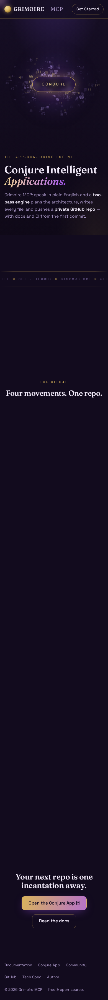

Target: https://arnav1771.github.io/grimoire-MCP/ · 2026-07-18T08:20:20.293Z · headless Chromium 1280×800 + 390×844 · recorded session
| # | Step | Result | Evidence |
|---|---|---|---|
| 1 | Landing renders (portal paints, marquee, CONJURE, count-ups) | PASS | canvas alpha-sum 20131; stats [15+ 4 5 2 0] |
| 2 | Incantation → conjure prefill | PASS | prompt="a pomodoro timer web app" |
| 3 | Conjure contract + caster chips | PASS | missing:[] modelOpts:3 chip→anthropic label:'Anthropic API key' disabled:2 |
| 4 | Empty submit is safe | PASS | app.js error line in #output |
| 5 | Docs Try-it-out → Run → prefill | PASS | sidebar links:7 prompt="a chat app with rooms" |
| 6 | Community live GitHub data (or graceful fallback) | PASS | leaderboard avatars:1 commit links:5 (LIVE data) |
| 7 | Mobile 390×844 — no horizontal overflow | PASS | overflow 0px |
none — zero console errors across every page and step.
recording-mobile.mp4 covers the mobile step.


